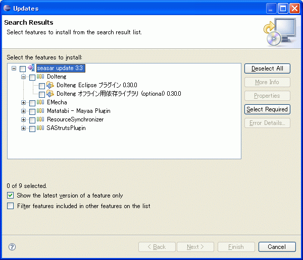
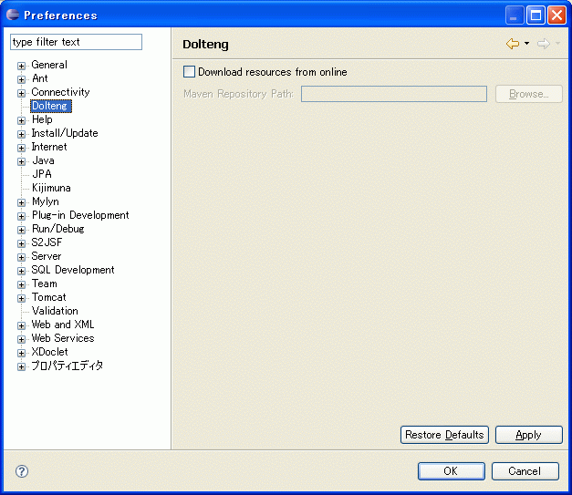

Welcome to the "dolteng" project.
概要
Dolteng(どぅるてん)はEclipseによるseasar関連プロダクトの開発効率を向上させる為のプラグインです。 非常に多くの機能をもっています。
NEWS
セットアップ
Eclipse3.3および3.4,JDK5.0以降で動作します。次の更新サイトから「Dolteng」を選択してインストールしてください。
インストール時に更新サイトの下に表示される 「Dolteng」をチェックした場合、最初に依存ライブラリをすべてダウンロードします。 「Dolteng」の下を開いて、「Dolteng Eclipse Plugin」 のみチェックし、「Dolteng オフライン用依存ライブラリ」 をチェックしなかった場合はローカルにあるmaven2リポジトリを使用する事で 最初に依存ライブラリをダウンロードしないようにする事も出来ます。
「Dolteng オフライン用依存ライブラリ」 をチェックしなかった場合は依存ライブラリをmaven2リポジトリから取る様にする為、 「Window」-「Preferences」で設定ダイアログを開き、Doltengグループで設定を行います。
ここでは、「Download resources from online」のチェックボックスをonにした上で、 「Maven repository Path」に、ローカルリポジトリのパスを入力します。 例えば、Windowsで、デフォルト設定のままmaven2を使っている場合には、 「C:\Documents and Settings\ユーザ名\.m2」のようになります。
Kuina-Daoを使う場合はDiiguプラグインも次の更新サイトからインストールしてください。
DBを使う場合はDbLauncherも次の更新サイトからインストールしてください。
WTPを使わない場合はSysdeo/SQLI Tomcat Launcherも次の更新サイトからインストールしてください。
使い方
メーリングリスト
- seasar-user
-
Seasar2および関連プロダクトの利用者のためのメーリングリストです。
Doltengを利用していて疑問に思ったことや困ったこと、要望などはこちらへ。
件名に[Dolteng]を含めていただけると幸いです。またEclipseのエラーログに何か出ている場合はその情報も送っていただけると問題解決がスムーズになります。
- seasar-dev
-
Seasar2および関連プロダクト開発者のためのメーリングリストです。
トラッキング
- JIRA
- DoltengのバグはJIRAで管理されています。
Subversionリポジトリ
Doltengを利用していて疑問に思ったことや困ったこと、要望などはこちらへ。
件名に[Dolteng]を含めていただけると幸いです。またEclipseのエラーログに何か出ている場合はその情報も送っていただけると問題解決がスムーズになります。
- JIRA
- DoltengのバグはJIRAで管理されています。
Subversionリポジトリ
Dolteng のソースコードは、seasar.org のSubversionリポジトリで公開されています。 どなたでもアクセスしてソースコードを閲覧することができます。 (以下のリンクをクリックするとWeb経由でもソースコードを閲覧できます)
- SVNリポジトリのURL
- https://www.seasar.org/svn/sandbox/dolteng/